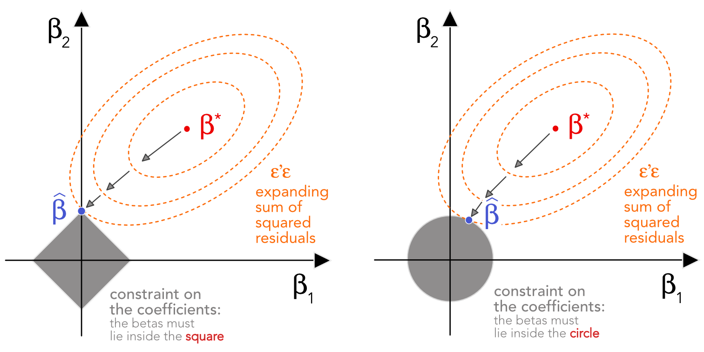
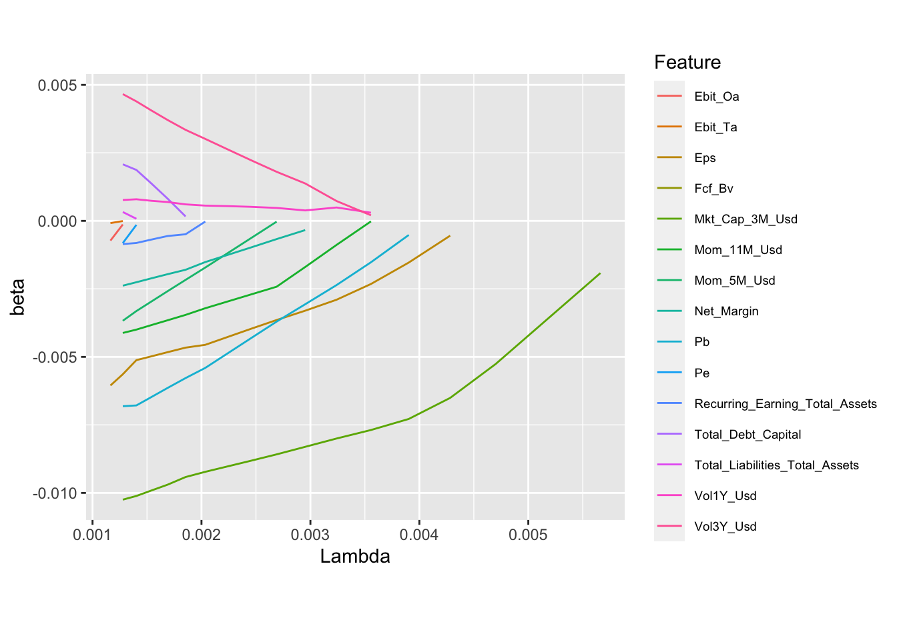
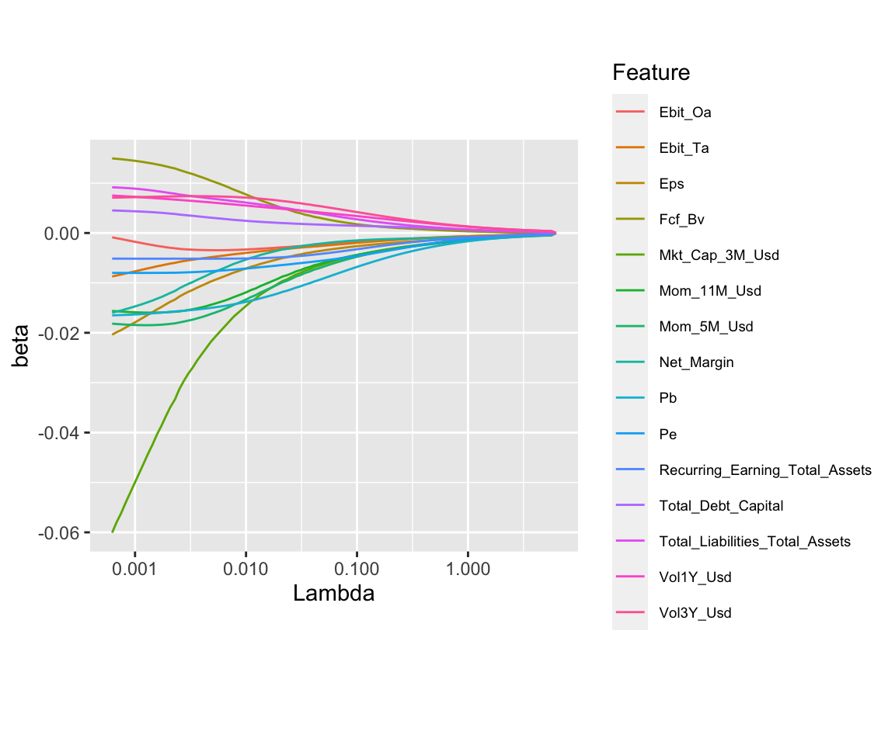

5 惩罚回归与最小方差投资组合的稀疏对冲
在本章中，我们介绍了线性模型中广泛应用的正则化概念。事实上，这些模型有多种可能的应用。第一个很简单：利用惩罚来提高基于因子的预测回归的稳健性。然后，结果可用于推动分配方案。例如， Han et al. (2019) 和 D. Rapach and Zhou (2019) 在组合来自个体特征的预测时，使用惩罚回归来改进股票收益预测。
例如，可以为宏观经济预测提出类似的想法，如 Uematsu and Tanaka (2019)。 第二个应用源于一个鲜为人知的结果，该结果源自 Stevens (1998)。它将最优均值方差投资组合的权重与特定的横截面回归联系起来。那么想法是不同的，目的是提高均值方差驱动的投资组合权重的质量。在介绍线性模型的正则化技术之后，我们提出了下面的两种方法。
惩罚的金融应用的其他例子可以在 d’Aspremont (2011), Ban, El Karoui, and Lim (2016) 和 Kremer et al. (2019)。无论如何，这个想法与开创性论文中的想法相同 Tibshirani (1996)：标准（无约束）优化程序可能会导致噪声估计，因此添加结构约束有助于消除一些噪声（以可能的偏差为代价）。例如， Kremer et al. (2019) 使用这个概念来构建更稳健的均值方差（Markowitz (1952)）投资组合和 Freyberger, Neuhierl, and Weber (2020) 用它来挑选出以下特征 真的 帮助解释股票收益率的横截面。
5.1 惩罚回归
5.1.1 简单回归
线性模型背后的思想至少有两个世纪的历史了（Legendre (1805) 是关于最小二乘优化的早期参考）。给定一个预测变量矩阵 \(\textbf{X}\)，我们寻求分解输出向量 \(\textbf{y}\) 作为列的线性函数 \(\textbf{X}\) （写成 \(\textbf{X}\boldsymbol{\beta}\)) 加上一个误差项 \(\boldsymbol{\epsilon}\): \(\textbf{y}=\textbf{X}\boldsymbol{\beta}+\boldsymbol{\epsilon}\).
最好的选择 \(\boldsymbol{\beta}\) 自然是误差最小化的一个。对于分析易处理性，它是最小化的平方误差之和： \(L=\boldsymbol{\epsilon}'\boldsymbol{\epsilon}=\sum_{i=1}^I\epsilon_i^2\)。损失 \(L\) 称为残差平方和 (SSR)。为了找到最优的 \(\boldsymbol{\beta}\)，必须对这个损失进行微分 \(L\) 关于 \(\boldsymbol{\beta}\) 因为一阶条件要求梯度为零： \[\begin{align*} \nabla_{\boldsymbol{\beta}} L&=\frac{\partial}{\partial \boldsymbol{\beta}}(\textbf{y}-\textbf{X}\boldsymbol{\beta})'(\textbf{y}-\textbf{X}\boldsymbol{\beta})=\frac{\partial}{\partial \boldsymbol{\beta}}\boldsymbol{\beta}'\textbf{X}'\textbf{X}\boldsymbol{\beta}-2\textbf{y}'\textbf{X}\boldsymbol{\beta} \\ &=2\textbf{X}'\textbf{X}\boldsymbol{\beta} -2\textbf{X}'\textbf{y} \end{align*}\] 使得一阶条件 \(\nabla_{\boldsymbol{\beta}}=\textbf{0}\) 满意如果 \[\begin{equation} \tag{5.1} \boldsymbol{\beta}^*=(\textbf{X}'\textbf{X})^{-1}\textbf{X}'\textbf{y}, \end{equation}\] 这就是所谓的标准 普通最小二乘法 (OLS) 线性模型的解。如果矩阵 \(\textbf{X}\) 有尺寸 \(I \times K\)，那么 \(\textbf{X}'\textbf{X}\) 仅当行数满足条件时才能反转 \(I\) 严格优于列数 \(K\)。在某些情况下，这可能不成立；预测变量多于实例，并且没有唯一值 \(\boldsymbol{\beta}\) 从而最大限度地减少损失。如果 \(\textbf{X}'\textbf{X}\) 是非奇异的（或正定的），那么二阶条件确保 \(\boldsymbol{\beta}^*\) 产生全局最小损失 \(L\) （二阶导数 \(L\) 关于 \(\boldsymbol{\beta}\)，Hessian 矩阵恰好是 \(\textbf{X}'\textbf{X}\)).
到目前为止，我们还没有对上述任何数量做出分布假设。标准假设如下：
- \(\mathbb{E}[\textbf{y}|\textbf{X}]=\textbf{X}\boldsymbol{\beta}\): 回归函数的线性形状;
- \(\mathbb{E}[\boldsymbol{\epsilon}|\textbf{X}]=\textbf{0}\): 错误是 独立于预测变量;
- \(\mathbb{E}[\boldsymbol{\epsilon}\boldsymbol{\epsilon}'| \textbf{X}]=\sigma^2\textbf{I}\): 同方差性 - 误差不相关且具有相同的方差；
- 的 \(\epsilon_i\) 呈正态分布。
在这些假设下，可以进行与 \(\hat{\boldsymbol{\beta}}\) 系数。我们参考第 2 章至第 4 章 Greene (2018) 有关线性模型的彻底处理，以及同一本书的第 5 章有关相应测试的详细信息。
5.1.2 惩罚形式
自从 Tibshirani (1996)。这个想法是对回归系数施加约束，即限制它们的总大小。在他的原始论文中， Tibshirani (1996) 建议估计以下模型（LASSO）： \[\begin{equation} \tag{5.2} y_i = \sum_{j=1}^J \beta_jx_{i,j} + \epsilon_i, \quad i =1,\dots,I, \quad \text{s.t.} \quad \sum_{j=1}^J |\beta_j| < \delta, \end{equation}\] 对于一些严格的正常数 \(\delta\)。在最小二乘最小化下，这相当于求解拉格朗日公式： \[\begin{equation} \tag{5.3} \underset{\mathbf{\beta}}{\min} \, \left\{ \sum_{i=1}^I\left(y_i - \sum_{j=1}^J \beta_jx_{i,j} \right)^2+\lambda \sum_{j=1}^J |\beta_j| \right\}, \end{equation}\] 为了某种价值 \(\lambda>0\) 这自然取决于 \(\delta\) （越低 \(\delta\)，越高 \(\lambda\)：约束更具约束力）。该规范似乎接近岭回归（\(L^2\) 正则化），实际上位于 Lasso 之前： \[\begin{equation} \tag{5.4} \underset{\mathbf{\beta}}{\min} \, \left\{ \sum_{i=1}^I\left(y_i - \sum_{j=1}^J\beta_jx_{i,j} \right)^2+\lambda \sum_{j=1}^J \beta_j^2 \right\}, \end{equation}\] 相当于估计以下模型 \[\begin{equation} \tag{5.5} y_i = \sum_{j=1}^J \beta_jx_{i,j} + \epsilon_i, \quad i =1,\dots,I, \quad \text{s.t.} \quad \sum_{j=1}^J \beta_j^2 < \delta, \end{equation}\] 但结果实际上完全不同，这证明了单独处理的合理性。从机制上看，随着 \(\lambda\) 增大，惩罚强度增加（或等价地，方程 (5.5) 中的 \(\delta\) 减小），岭回归的系数都会缓慢收缩到零。在 LASSO 的情况下，收缩更陡峭，因为一些系数会很快变为零。当 \(\lambda\) 足够大时，只有一个系数保持非零，而在岭回归中，所有系数只是渐近趋近于零。我们邀请有兴趣的读者查看 Hastie (2020) 的综述，了解岭回归在数据科学中的各种应用，以及它与交叉验证、dropout 正则化等主题的联系。
为了描述 Lasso 和岭回归之间的差异，让我们考虑如图 5.1 所示的 \(K=2\) 个预测变量情形。最优无约束解 \(\boldsymbol{\beta}^*\) 位于空间中间的红色区域。问题在于它并不满足施加的约束。这些约束以浅灰色显示：LASSO 对应正方形 \(|\beta_1|+|\beta_2| \le \delta\)，岭回归对应圆形 \(\beta_1^2+\beta_2^2 \le \delta\)。为了满足这些约束，优化必须在 \(\boldsymbol{\beta}^*\) 附近寻找一个允许更大误差的点。这些误差水平在图中显示为橙色椭圆。当误差约束足够宽松时，一个椭圆触及可接受边界（灰色），约束解就位于该接触点。

图 5.1：Lasso（左）与 ridge（右）回归的示意图。
当外生变量的数量超过观测值的数量时，即在经典回归定义不明确的情况下，这两种方法都有效。这在岭回归的情况下很容易看出，OLS 的解很简单 \[\hat{\boldsymbol{\beta}}=(\mathbf{X}'\mathbf{X}+\lambda \mathbf{I}_N)^{-1}\mathbf{X}'\mathbf{Y}.\] 附加项 \(\lambda \mathbf{I}_N\) 相比方程 (5.1) 可以确保只要 \(\lambda>0\)，逆矩阵就总是明确定义的。随着 \(\lambda\) 增加，\(\hat{\beta}_i\) 的幅度减小，这解释了为什么惩罚方法有时被称为 收缩 方法（估计系数的值会缩小）。
Zou and Hastie (2005) 提议以凸方式结合两种惩罚（他们称之为 elastic net): \[\begin{equation} \tag{5.6} y_i = \sum_{j=1}^J \beta_jx_{i,j} + \epsilon_i, \quad \text{s.t.} \quad \alpha \sum_{j=1}^J |\beta_j| +(1-\alpha)\sum_{j=1}^J \beta_j^2< \delta, \quad i =1,\dots,N, \end{equation}\] 与优化程序相关 \[\begin{equation} \tag{5.7} \underset{\mathbf{\beta}}{\min} \, \left\{ \sum_{i=1}^I\left(y_i - \sum_{j=1}^J\beta_jx_{i,j} \right)^2+\lambda \left(\alpha\sum_{j=1}^J |\beta_j|+ (1-\alpha)\sum_{j=1}^J \beta_j^2\right) \right\}. \end{equation}\]
与岭回归相比，LASSO 的主要优点是它的变量选择能力。事实上，给定大量变量（或预测变量），LASSO 会逐步排除那些最不相关的变量。elastic net 保留了这种选择能力，并且 Zou and Hastie (2005) 认为在某些情况下，它甚至比 LASSO 更有效。参数 \(\alpha \in [0,1]\) 调节系数收缩到零的平滑程度。\(\alpha\) 越接近零，收缩越平滑。
5.1.3 示例
我们从惩罚回归的简单示例开始。我们从 LASSO 开始。作者最初的实现是用 R 语言完成的，使用起来很方便。与通常的线性模型相比，语法略有不同。这些示例在整个数据集上运行。首先，我们估计系数。默认情况下，该函数会选择大量惩罚值，以便立即显示不同惩罚强度（\(\lambda\)）下的结果。
library(glmnet)
y_penalized <- data_ml$R1M_Usd # Dependent variable
x_penalized <- data_ml %>% # Predictors
dplyr::select(all_of(features)) %>% as.matrix()
fit_lasso <- glmnet(x_penalized, y_penalized, alpha = 1) # Model alpha = 1: LASSO一旦计算出系数，绘图之前还需要做一些整理。此外，系数太多，所以我们只绘制其中一个子集。
lasso_res <- summary(fit_lasso$beta) # Extract LASSO coefs
lambda <- fit_lasso$lambda # Values of the penalisation const
lasso_res$Lambda <- lambda[lasso_res$j] # Put the labels where they belong
lasso_res$Feature <- features[lasso_res$i] %>% as.factor() # Add names of variables to output
lasso_res[1:120,] %>% # Take the first 120 estimates
ggplot(aes(x = Lambda, y = x, color = Feature)) + # Plot!
geom_line() + coord_fixed(0.25) + ylab("beta") + # Change aspect ratio of graph
theme(legend.text = element_text(size = 7)) # Reduce legend font size
图 5.2： LASSO 模型。因变量是未来 1 个月收益率。
该图绘制了随着惩罚强度 \(\lambda\) 增加，系数如何演变。对于某些特征，例如 Ebit_Ta（橙色），系数很快收缩到零。其他变量对惩罚的抵抗更久，例如 Mkt_Cap_3M_Usd，它是最后一个消失的变量。本质上，这意味着在我们的样本中，从一阶意义上看，该变量是未来 1 个月收益率的重要驱动因素。此外，其系数的负号也确认了规模异象（同样是在这个样本中）：根据该异象，小公司比大公司获得更高的未来收益率。
接下来，我们转向岭回归。
fit_ridge <- glmnet(x_penalized, y_penalized, alpha = 0) # alpha = 0: ridge
ridge_res <- summary(fit_ridge$beta) # Extract ridge coefs
lambda <- fit_ridge$lambda # Penalisation const
ridge_res$Feature <- features[ridge_res$i] %>% as.factor()
ridge_res$Lambda <- lambda[ridge_res$j] # Set labels right
ridge_res %>%
filter(Feature %in% levels(droplevels(lasso_res$Feature[1:120]))) %>% # Keep same features
ggplot(aes(x = Lambda, y = x, color = Feature)) + ylab("beta") + # Plot!
geom_line() + scale_x_log10() + coord_fixed(45) + # Aspect ratio
theme(legend.text = element_text(size = 7))
图 5.3：岭回归。因变量是未来 1 个月收益率。
在图 5.3 中，系数收缩到零的过程更加平滑。我们强调，x 轴（惩罚强度）采用对数刻度。这样可以更清楚地看到早期模式（接近零、位于左侧的区域）。如上图所示，Mkt_Cap_3M_Usd 预测变量明显占主导地位，同样具有较大的负系数。尽管如此，随着 \(\lambda\) 增加，它对其他预测变量的支配作用会减弱。
根据定义，elastic net 将产生类似于上述两种方法混合的曲线。尽管如此，只要 \(\alpha >0\)，LASSO 的选择性属性就会保留：某些特征的系数将迅速收缩到零。事实上，LASSO 的强度使得两种惩罚的平衡组合不是在 \(\alpha = 1/2\) 处取得，而是在小得多的值处取得（可能低于 0.1）。
5.2 最小方差投资组合的稀疏对冲
5.2.1 说明与推导
构建稀疏投资组合的想法本身并不新鲜（参见，例如， Brodie et al. (2009), Fastrich, Paterlini, and Winker (2015)），它与 LASSO 选择性属性的联系在经典二次规划中也相当直接。请注意，选择 \(L^1\) 范数是必要的，因为如果采用简单的 \(L^2\) 范数，投资组合的多元化程度会增加（见 Coqueret (2015)）。
本节背后的想法源于 Goto and Xu (2015) 但基石结果首先由 Stevens (1998) 我们在下面介绍它。我们提供详细信息，因为这些推导在文献中并不常见。
在通常的均值方差分配中，核心要素之一是资产的逆协方差矩阵 \(\mathbf{\Sigma}^{-1}\)。例如，最大夏普比率 (MSR) 投资组合由下式给出
\[\begin{equation} \tag{5.8} \mathbf{w}^{\text{MSR}}=\frac{\mathbf{\Sigma}^{-1}\boldsymbol{\mu}}{\mathbf{1}'\mathbf{\Sigma}^{-1}\boldsymbol{\mu}}, \end{equation}\] 其中 \(\mathbf{\mu}\) 是预期（超额）收益率的向量。取 \(\mathbf{\mu}=\mathbf{1}\) 会产生最小方差投资组合，它对预期收益率的一阶矩持不可知立场（因此通常比许多试图估计 \(\boldsymbol{\mu}\)、但经常失败的替代方案更稳健）。
通常，传统的方法是估计 \(\boldsymbol{\Sigma}\) 并将其反转以获得 MSR 权重。然而，有几种方法旨在估计 \(\boldsymbol{\Sigma}^{-1}\) 下面我们介绍其中之一。我们一次处理一项资产，即一行 \(\boldsymbol{\Sigma}^{-1}\) 一次。
如果我们分解矩阵 \(\mathbf{\Sigma}\) 进入：
\[\mathbf{\Sigma}= \left[\begin{array}{cc} \sigma^2 & \mathbf{c}' \\
\mathbf{c}& \mathbf{C}\end{array} \right],\]
经典分块结果（例如 Schur 补集）意味着
\[\small \mathbf{\Sigma}^{-1}= \left[\begin{array}{cc} (\sigma^2 -\mathbf{c}'\mathbf{C}^{-1}\mathbf{c})^{-1} & - (\sigma^2 -\mathbf{c}'\mathbf{C}^{-1}\mathbf{c})^{-1}\mathbf{c}'\mathbf{C}^{-1} \\
- (\sigma^2 -\mathbf{c}'\mathbf{C}^{-1}\mathbf{c})^{-1}\mathbf{C}^{-1}\mathbf{c}& \mathbf{C}^{-1}+ (\sigma^2 -\mathbf{c}'\mathbf{C}^{-1}\mathbf{c})^{-1}\mathbf{C}^{-1}\mathbf{cc}'\mathbf{C}^{-1}\end{array} \right].\]
我们对第一行感兴趣，它有两个组成部分：因子 \((\sigma^2 -\mathbf{c}'\mathbf{C}^{-1}\mathbf{c})^{-1}\) 和线向量 \(\mathbf{c}'\mathbf{C}^{-1}\). \(\mathbf{C}\) 是资产的协方差矩阵 \(2\) 到 \(N\) 和 \(\mathbf{c}\) 是第一个资产和所有其他资产之间的协方差。第一行 \(\mathbf{\Sigma}^{-1}\) 是
\[\begin{equation}
\tag{5.9}
(\sigma^2 -\mathbf{c}'\mathbf{C}^{-1}\mathbf{c})^{-1} \left[1 \quad \underbrace{-\mathbf{c}'\mathbf{C}^{-1}}_{N-1 \text{ terms}} \right].
\end{equation}\]
我们现在考虑另一种设置。我们将第一个资产的收益率对所有其他资产的收益率进行回归： \[\begin{equation} \tag{5.10} r_{1,t}=a_1+\sum_{n=2}^N\beta_{1|n}r_{n,t}+\epsilon_t, \quad \text{ i.e., } \quad \mathbf{r}_1=a_1\mathbf{1}_T+\mathbf{R}_{-1}\mathbf{\beta}_1+\epsilon_1, \end{equation}\] 其中 \(\mathbf{R}_{-1}\) 收集除第一个资产之外的所有资产的收益率。 OLS 估计器 \(\mathbf{\beta}_1\) 是 \[\begin{equation} \tag{5.11} \hat{\mathbf{\beta}}_{1}=\mathbf{C}^{-1}\mathbf{c}, \end{equation}\]
这是源自 Frisch-Waugh-Lovell 定理的分区形式（当回归中包含常数时）（请参见第 3 章） Greene (2018)).
此外， \[\begin{equation} \tag{5.12} (1-R^2)\sigma_{\mathbf{r}_1}^2=\sigma_{\mathbf{r}_1}^2- \mathbf{c}'\mathbf{C}^{-1}\mathbf{c} =\sigma^2_{\epsilon_1}. \end{equation}\] 最后一个事实的证明如下。
令 \(\mathbf{X}\) 为 \(\mathbf{1}_T\) 与收益率矩阵 \(\mathbf{R}_{-1}\) 的拼接，并令 \(\mathbf{y}=\mathbf{r}_1\)，则 \(R^2\) 的经典表达式为 \[R^2=1-\frac{\mathbf{\epsilon}'\mathbf{\epsilon}}{T\sigma_Y^2}=1-\frac{\mathbf{y}'\mathbf{y}-\hat{\mathbf{\beta}'}\mathbf{X}'\mathbf{X}\hat{\mathbf{\beta}}}{T\sigma_Y^2}=1-\frac{\mathbf{y}'\mathbf{y}-\mathbf{y}'\mathbf{X}\hat{\mathbf{\beta}}}{T\sigma_Y^2},\] 具有拟合值 \(\mathbf{X}\hat{\mathbf{\beta}}= \hat{a_1}\mathbf{1}_T+\mathbf{R}_{-1}\mathbf{C}^{-1}\mathbf{c}\)。因此， \[\begin{align*} T\sigma_{\mathbf{r}_1}^2R^2&=T\sigma_{\mathbf{r}_1}^2-\mathbf{r}'_1\mathbf{r}_1+\hat{a_1}\mathbf{1}'_T\mathbf{r}_1+\mathbf{r}'_1\mathbf{R}_{-1}\mathbf{C}^{-1}\mathbf{c} \\ T(1-R^2)\sigma_{\mathbf{r}_1}^2&=\mathbf{r}'_1\mathbf{r}_1-\hat{a_1}\mathbf{1}'_T\mathbf{r}_1-\left(\mathbf{\tilde{r}}_1+\frac{\mathbf{1}_T\mathbf{1}'_T}{T}\mathbf{r}_1\right)'\left(\tilde{\mathbf{R}}_{-1}+\frac{\mathbf{1}_T\mathbf{1}'_T}{T}\mathbf{R}_{-1}\right)\mathbf{C}^{-1}\mathbf{c} \\ T(1-R^2)\sigma_{\mathbf{r}_1}^2&=\mathbf{r}'_1\mathbf{r}_1-\hat{a_1}\mathbf{1}'_T\mathbf{r}_1-T\mathbf{c}'\mathbf{C}^{-1}\mathbf{c} -\mathbf{r}'_1\frac{\mathbf{1}_T\mathbf{1}'_T}{T}\mathbf{R}_{-1} \mathbf{C}^{-1}\mathbf{c} \\ T(1-R^2)\sigma_{\mathbf{r}_1}^2&=\mathbf{r}'_1\mathbf{r}_1-\frac{(\mathbf{1}'_T\mathbf{r}_1)^2}{T}- T\mathbf{c}'\mathbf{C}^{-1}\mathbf{c} \\ (1-R^2)\sigma_{\mathbf{r}_1}^2&=\sigma_{\mathbf{r}_1}^2- \mathbf{c}'\mathbf{C}^{-1}\mathbf{c} \end{align*}\] 我们在第四个等式中插入了 \(\hat{a}_1=\frac{\mathbf{1'}_T}{T}(\mathbf{r}_1-\mathbf{R}_{-1}\mathbf{C}^{-1}\mathbf{c})\)。请注意，可能有一个更简单的证明，请参见，例如，第 3.5 节 Greene (2018).
结合（(5.9), ((5.11)) 和 ((5.12)），我们得到第一行 \(\mathbf{\Sigma}^{-1}\) 等于 \[\begin{equation} \tag{5.13} \frac{1}{\sigma^2_{\epsilon_1}}\times \left[ 1 \quad -\hat{\boldsymbol{\beta}}_1'\right]. \end{equation}\]
给定 \(\mathbf{\Sigma}^{-1}\) 的第一行，只需乘以 \(\boldsymbol{\mu}\)，即可得到第一个资产的投资组合权重（差一个缩放常数）。
上述结果背后有一个很好的经济直觉，这证明了“稀疏对冲”一词的合理性。我们以最小方差投资组合为例，其中 \(\boldsymbol{\mu}=\boldsymbol{1}\)。在方程中 (5.10)，我们尝试用所有其他资产的收益率来解释资产 1 的收益率。在上面的等式中，在达到比例常数的情况下，投资组合在第一个资产中具有单位头寸，并且 \(-\hat{\boldsymbol{\beta}}_1\) 所有其他资产的头寸。因此，所有其他资产的目的显然是为了对冲第一个资产的收益率。事实上，这些头寸的目的是最小化第一个资产的总投资组合的平方误差（这些误差恰好是 \(\mathbf{\epsilon}_1\)）。此外，缩放因子 \(\sigma^{-2}_{\epsilon_1}\) 解释起来也很简单：我们越相信回归输出（因为一个小的 \(\sigma^{2}_{\epsilon_1}\)），我们对资产的对冲投资组合的投资就越多。
这个推理很容易推广到 \(\mathbf{\Sigma}^{-1}\) 的任何一行：通过将资产 \(i\) 的收益率对所有其他资产的收益率做回归即可得到。如果给定 \(\boldsymbol{\mu}\) 时，分配方案的形式为（(5.8)），那么稀疏投资组合策略的伪代码如下。
在每个日期（为了符号方便我们省略了），
- 对于所有股票 \(i\),
- 在 \(t=1,\dots,T\) 样本上估计 elastic net 回归，以获得 \(\hat{\mathbf{\Sigma}}^{-1}\) 的第 \(i\) 行：
\[ \small \left[\hat{\mathbf{\Sigma}}^{-1}\right]_{i,\cdot}= \underset{\mathbf{\beta}_{i|}}{\text{argmin}}\, \left\{\sum_{t=1}^T\left( r_{i,t}-a_i+\sum_{n\neq i}^N\beta_{i|n}r_{n,t}\right)^2+\lambda \alpha || \mathbf{\beta}_{i|}||_1+\lambda (1-\alpha)||\mathbf{\beta}_{i|}||_2^2\right\}
\]
- 为获得资产 \(i\) 的权重，我们计算 \(\mathbf{\mu}\) 加权总和： \(w_i= \sigma_{\epsilon_i}^{-2}\left(\mu_i- \sum_{j\neq i}\mathbf{\beta}_{i|j}\mu_j\right)\),
回忆向量 \(\mathbf{\beta}_{i|}=[\mathbf{\beta}_{i|1},\dots,\mathbf{\beta}_{i|i-1},\mathbf{\beta}_{i|i+1},\dots,\mathbf{\beta}_{i|N}]\) 是资产 \(i\) 的收益率对所有其他资产收益率回归得到的系数。
与 Stevens (1998) 的原始方法相比，引入 惩罚范数 是新的成分。好处有两点：首先，引入约束可以产生更稳健的权重，并且在估计 \(\mathbf{\mu}\) 时受误差影响更小；其次，由于稀疏性，权重更稳定，杠杆率更低，因此该策略受交易成本的影响更小。在转向数值应用之前，我们还提到一种更直接的估计 鲁棒逆协方差矩阵 的方法：图 LASSO。GLASSO 通过最大似然估计精度矩阵（逆协方差矩阵），同时对矩阵的权重施加约束/惩罚。当惩罚足够强时，就会产生稀疏矩阵，即一些系数（可能有许多系数）为零的矩阵。关于这一主题的更多细节，我们参考原文 J. Friedman, Hastie, and Tibshirani (2008)。
5.2.2 示例
稀疏对冲投资组合的目的是提出一种稳健的方法来估计最小方差策略。事实上，由于预期收益率向量 \(\boldsymbol{\mu}\) 通常噪声很大，一个简单的解决方案是设置 \(\boldsymbol{\mu}=\boldsymbol{1}\)，采取不可知立场。为了测试稀疏约束的附加价值，我们必须进行完整的回测。在此过程中，我们会预先用到第 12 章的内容。
我们首先准备变量。稀疏投资组合仅基于收益率；因此，我们的分析基于矩阵/矩形格式的专用变量（收益率）在本章末尾创建 1.
然后，我们初始化输出变量：投资组合权重和投资组合收益率。我们想要比较三种策略：所有股票的等权重 (EW) 基准、经典的全局最小方差投资组合 (GMV) 和最小方差的稀疏对冲方法。
t_oos <- returns$date[returns$date > separation_date] %>% # Out-of-sample dates
unique() %>% # Remove duplicates
as.Date(origin = "1970-01-01") # Transform in date format
Tt <- length(t_oos) # Nb of dates, avoid T
nb_port <- 3 # Nb of portfolios/strats.
portf_weights <- array(0, dim = c(Tt, nb_port, ncol(returns) - 1)) # Initial portf. weights
portf_returns <- matrix(0, nrow = Tt, ncol = nb_port) # Initial portf. returns 接下来，因为这是本节的目的，我们将稀疏对冲投资组合的权重计算分开。在最小方差投资组合的情况下，当 \(\boldsymbol{\mu}=\boldsymbol{1}\)，资产 1 的权重只是方程中所有项的总和 (5.13) 其他权重也有类似的形式。
weights_sparsehedge <- function(returns, alpha, lambda){ # The parameters are defined here
w <- 0 # Initiate weights
for(i in 1:ncol(returns)){ # Loop on the assets
y <- returns[,i] # Dependent variable
x <- returns[,-i] # Independent variable
fit <- glmnet(x,y, family = "gaussian", alpha = alpha, lambda = lambda)
err <- y-predict(fit, x) # Prediction errors
w[i] <- (1-sum(fit$beta))/var(err) # Output: weight of asset i
}
return(w / sum(w)) # Normalisation of weights
}为了对我们的策略进行基准测试，我们定义了一个嵌入三种策略的元加权函数：(1) EW 基准，(2) 经典的 GMV 和 (3) 稀疏对冲最小方差。对于 GMV，由于资产比日期多得多，因此协方差矩阵是奇异的。因此，我们有一个小的启发式收缩项。为了更严格地处理该技术，我们参考了原始文章 Olivier Ledoit and Wolf (2004) 以及最近提到的改进 Olivier Ledoit and Wolf (2017)。简而言之，我们使用 \(\hat{\boldsymbol{\Sigma}}=\boldsymbol{\Sigma}_S+\delta \boldsymbol{I}\) 对于一些小常数 \(\delta\) （等于下面代码中的 0.01）。
weights_multi <- function(returns,j, alpha, lambda){
N <- ncol(returns)
if(j == 1){ # j = 1 => EW
return(rep(1/N,N))
}
if(j == 2){ # j = 2 => Minimum Variance
sigma <- cov(returns) + 0.01 * diag(N) # Covariance matrix + regularizing term
w <- solve(sigma) %*% rep(1,N) # Inverse & multiply
return(w / sum(w)) # Normalize
}
if(j == 3){ # j = 3 => Penalised / elasticnet
w <- weights_sparsehedge(returns, alpha, lambda)
}
}最后，我们进入回测循环。考虑到资产的数量，循环的执行需要几分钟。在循环结束时，我们计算投资组合收益率的标准差（每月波动率）。这是关键指标，因为最小方差旨在最小化这一特定指标。
for(t in 1:length(t_oos)){ # Loop = rebal. dates
temp_data <- returns %>% # Data for weights
filter(date < t_oos[t]) %>% # Expand. window
dplyr::select(-date) %>%
as.matrix()
realised_returns <- returns %>% # OOS returns
filter(date == t_oos[t]) %>%
dplyr::select(-date)
for(j in 1:nb_port){ # Loop over strats
portf_weights[t,j,] <- weights_multi(temp_data, j, 0.1, 0.1) # Hard-coded params!
portf_returns[t,j] <- sum(portf_weights[t,j,] * realised_returns) # Portf. returns
}
}
colnames(portf_returns) <- c("EW", "MV", "Sparse") # Colnames
apply(portf_returns, 2, sd) # Portfolio volatilities (monthly scale)## EW MV Sparse
## 0.04180422 0.03350424 0.02672169稀疏对冲限制的目的是更好地估计资产的协方差结构，从而使最小方差投资组合权重的估计更加准确。从上面的练习中，我们看到，基于稀疏对冲关系构建协方差矩阵时，月波动率确实降低了。如果我们使用缩小的样本协方差矩阵，则情况并非如此，因为资产之间的相关性估计中可能存在太多噪声。使用每日收益率可能会提高估计的质量。但上述回测表明，即使观察值（日期）数量与资产数量相比较少，惩罚方法也能表现良好。
5.3 预测回归
5.3.1 文献综述及原理
预测回归主题包含一系列非常有趣的文章。一项有影响力的贡献是 Stambaugh (1999)，其中作者展示了自变量自相关的回归的危险。在这种情况下，通常的 OLS 估计是有偏差的，因此必须进行纠正。从那时起，这些结果已向多个方向扩展（参见 Campbell and Yogo (2006) 和 Hjalmarsson (2011)，调查于 Gonzalo and Pitarakis (2018) 并且，最近的研究 Xu (2020) 多层面的可预测性）。
第二个重要主题涉及预测回归中系数的时间依赖性。这个方向的一项贡献是 Dangl and Halling (2012)，其中系数是通过贝叶斯过程估计的。最近 Kelly, Pruitt, and Su (2019) 使用时间相关的因子载荷对股票收益率的横截面进行建模。预测回归系数的随时间变化的性质进一步记录为 Henkel, Martin, and Nardari (2011) 为了短期收益率。最后， Farmer, Schmidt, and Timmermann (2019) 引入可预测性的概念：资产或市场经历不同的阶段；在某些阶段，它们是可以预测的，而在另一些阶段则不然。口袋里的钱是通过一个人的天数来衡量的 t- 统计量高于特定阈值并且按该阈值的大小 \(R^2\) 在考虑的期限内。正式的统计测试是由 Demetrescu et al. (2020).
在预测回归中引入惩罚至少可以追溯到 D. E. Rapach, Strauss, and Zhou (2013)，他们用惩罚方法评估美国市场与其他国际证券交易所之间的超前滞后关系。最近， Alexander Chinco, Clark-Joseph, and Ye (2019) 使用 LASSO 回归，根据不同范围内的过去收益率（横截面上）预测高频收益率。他们报告了统计上显著的收益。 Han et al. (2019) 和 D. Rapach and Zhou (2019) 分别使用 LASSO 和 elastic net 回归来改进预测组合，并筛选出解释股票收益率时重要的特征。最近， J. H. Lee, Shi, and Gao (2022) 对 LASSO 做了一些小改动，旨在提高系数估计的一致性。
这些贡献强调了预测回归和惩罚回归之间重叠的相关性。在基于简单机器学习的资产定价中，我们经常寻求构建诸如方程之类的模型 (3.6)。如果我们坚持线性关系并添加惩罚项，那么模型将变为： \[r_{t+1,n} = \alpha_n + \sum_{k=1}^K\beta_n^kf^k_{t,n}+\epsilon_{t+1,n}, \quad \text{s.t.} \quad (1-\alpha)\sum_{j=1}^J |\beta_j| +\alpha\sum_{j=1}^J \beta_j^2< \theta\] 其中我们将 \(f^k_{t,n}\) 与 \(x_{t,n}^k\) 互换使用，\(\theta\) 表示某种惩罚强度。同样，正则化的目的之一是生成更稳健的估计。如果提取出的模式在样本外依然存在，那么 \[\hat{r}_{t+1,n} = \hat{\alpha}_n + \sum_{k=1}^K\hat{\beta}_n^kf^k_{t,n},\] 将是未来表现的相对可靠的指标。
5.3.2 代码和结果
考虑到我们数据集的形式，实施惩罚预测回归很容易。
y_penalized_train <- training_sample$R1M_Usd # Dependent variable
x_penalized_train <- training_sample %>% # Predictors
dplyr::select(all_of(features)) %>% as.matrix()
fit_pen_pred <- glmnet(x_penalized_train, y_penalized_train, # Model
alpha = 0.1, lambda = 0.1)然后，我们报告两个关键性能指标：均方误差和命中率，即预测正确猜中收益率符号的次数比例。本书后面第 12 章给出了这些度量的详细说明。
x_penalized_test <- testing_sample %>% # Predictors
dplyr::select(all_of(features)) %>% as.matrix()
mean((predict(fit_pen_pred, x_penalized_test) - testing_sample$R1M_Usd)^2) # MSE## [1] 0.03699696## [1] 0.5460346从投资者的角度来看，MSEs（甚至平均绝对误差）很难解释，因为将它们在心理上映射到一些直观的财务指标是很复杂的。从这个角度来说，命中率就更自然了。它告诉我们预测获得正确符号的比例。如果投资者在积极信号中做多并在消极信号中做空，则命中率表示“正确”押注（朝着预期方向发展的头寸）的比例。自然阈值是 50%，但由于交易成本，51% 的准确预测可能不会盈利。 0.546这个数字可以被认为是一个相对较好的命中率，尽管不是一个非常令人印象深刻的命中率。